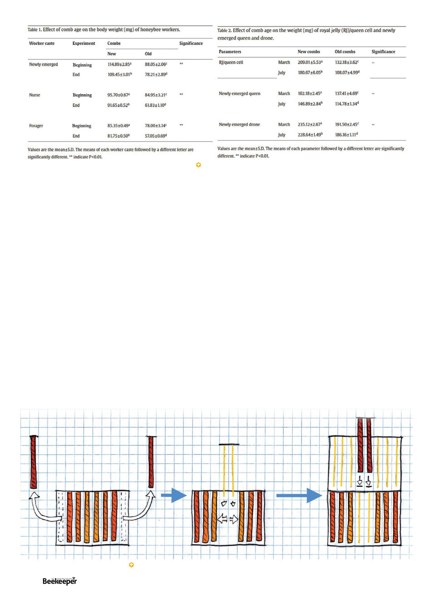

the middle of the super I’m adding. I push the remaining
frames outward and insert two brand new foundation
frames into the middle of the brood (or if I happen to have
two fresh fresh only-seen-honey drawn combs I might
insert them). This gap of two frames in the very middle
of the brood makes the bees on either side think they
don’t have enough population to swarm, but they’re not
constrained because they have that space, and the two
former-brood frames in the new super help encourage
the bees to immediately start going up there. Usually
the two outer frames were relatively full of pollen but
this isn’t a problem, they seem to immediately relocate
that pollen, it doesn’t result in pollen frames in my honey
super next time I check anyway.
As a result of doing this at least once a year, in my
eight frame brood boxes I always have, from one side to
another, frames aged less than 4, 3, 2, 1, 1, 2, 3, 4. But
that was before I read these studies, I might now do this
more aggressively to ensure my brood frames are no older
than 2 (probably by repeating the process mid season).
There are of course all kinds of ways to do beekeeping,
and many would baulk at the above method due to a
widely-held almost religious belief in “never splitting the
brood nest.” From years of experience though this method
works great and plain common sense would indicate that
in a full box of bees in Spring, a gap of two frames of
Diagram of described frame cycling procedure by Kris Fricke
brood isn’t going to collapse their temperature control.
There are more complicated frame replacement strategies
however which carefully avoid making any such gap..
But either way one will need to deal with frames of
old comb. One can cut across all four sides to remove
all the comb, though then you’ll have to rewire it as well.
A heat gun can more or less cause the wax to all but
fall out. Either way you’ll probably have to spend time
carefully scraping wax out of the groove in the topbar. It’s
altogether a bit tedious.
I have a way of avoiding this tedium you may find
scandalous. The natural cycle is that hives in the wild
rarely survive more than six years before failing; then wax
moths come in and convert all the comb to their sticky
fluffof webbing; and then mice use it for a nest, and then
the space is left vacant and empty for bees to move in and
restart the cycle. I like working with natural cycles.
And so I intentionally, yes intentionally, go through my
frames in storage just often enough (about once a month
here in the south) that ideally several square inches worth
of the centre of the old dark comb has been converted
into the devil’s fairy-floss by plump wax moth larvae, who
will be cheerfully squirming in the vicinity.
To curb their enthusiasm pluck them out and rain
them down upon your chooks, to whom nothing is more
delicious. Toss the webbing in the bushes, it will disappear,
(Taha 2021).
18 |
Celebrating 125 years | Vol. 126 | No. 01